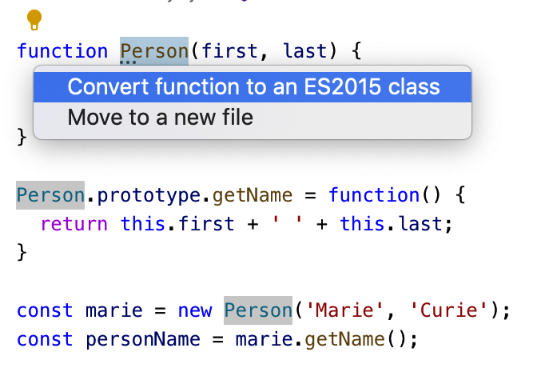
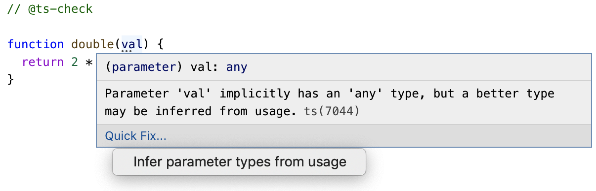
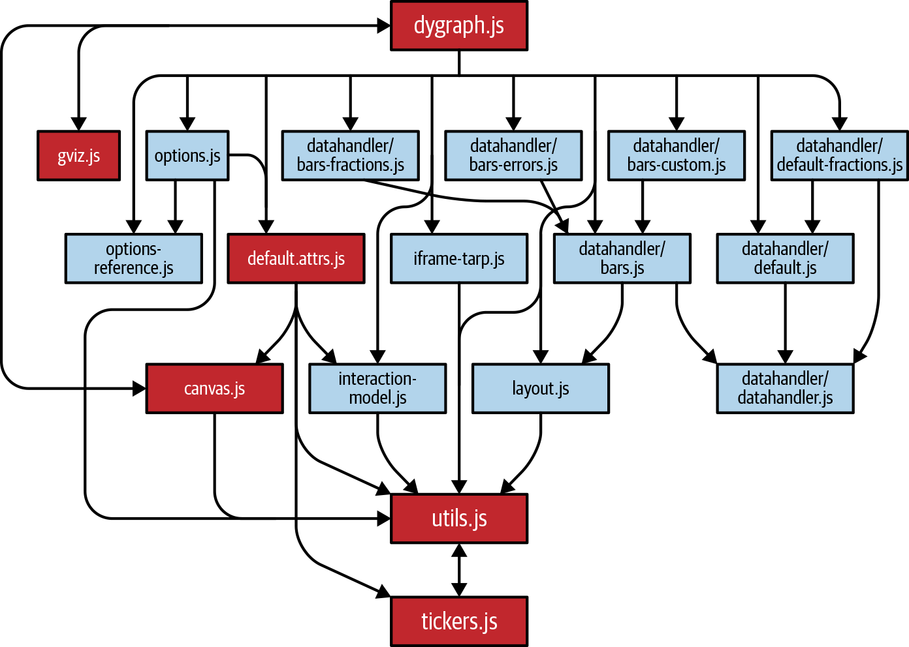
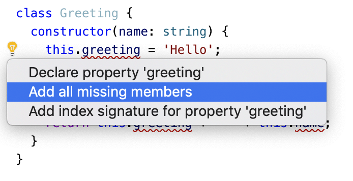

Chapter 8. Migrating to TypeScript
Item 58: Write Modern JavaScript
Use ECMAScript Modules
// CommonJS// a.jsconstb=require('./b');console.log(b.name);// b.jsconstname='Module B';module.exports={name};
// ECMAScript module// a.tsimport*asbfrom'./b';console.log(b.name);// b.tsexportconstname='Module B';
Use Classes Instead of Prototypes
functionPerson(first,last){this.first=first;this.last=last;}Person.prototype.getName=function(){returnthis.first+' '+this.last;}constmarie=newPerson('Marie','Curie');constpersonName=marie.getName();
classPerson{first:string;last:string;constructor(first:string,last:string){this.first=first;this.last=last;}getName() {returnthis.first+' '+this.last;}}constmarie=newPerson('Marie','Curie');constpersonName=marie.getName();

Figure 8-1. The TypeScript language service offers a quick fix to convert older-style classes to ES2015 classes.
Use let/const Instead of var
functionfoo() {bar();functionbar() {console.log('hello');}}
Use for-of or Array Methods Instead of for(;;)
for(vari=0;i<array.length;i++){constel=array[i];// ...}
for(constelofarray){// ...}
array.forEach((el,i)=>{// ...});
Prefer Arrow Functions Over Function Expressions
classFoo{method() {console.log(this);[1,2].forEach(function(i){console.log(this);});}}constf=newFoo();f.method();// Prints Foo, undefined, undefined in strict mode// Prints Foo, window, window (!) in non-strict mode
classFoo{method() {console.log(this);[1,2].forEach(i=>{console.log(this);});}}constf=newFoo();f.method();// Always prints Foo, Foo, Foo
Use Compact Object Literals and Destructuring Assignment
constx=1,y=2,z=3;constpt={x:x,y:y,z:z};
constx=1,y=2,z=3;constpt={x,y,z};
['A','B','C'].map((char,idx)=>({char,idx}));// [ { char: 'A', idx: 0 }, { char: 'B', idx: 1 }, { char: 'C', idx: 2 } ]
constobj={onClickLong:function(e){// ...},onClickCompact(e){// ...}};
constprops=obj.props;consta=props.a;constb=props.b;
const{props}=obj;const{a,b}=props;
const{props:{a,b}}=obj;
let{a}=obj.props;if(a===undefined)a='default';
const{a='default'}=obj.props;
constpoint=[1,2,3];const[x,y,z]=point;const[,a,b]=point;// Ignore the first one
constpoints=[[1,2,3],[4,5,6],];points.forEach(([x,y,z])=>console.log(x+y+z));// Logs 6, 15
Use Default Function Parameters
functionlog2(a,b){console.log(a,b);}log2();
undefined undefined
functionparseNum(str,base){base=base||10;returnparseInt(str,base);}
functionparseNum(str,base=10){returnparseInt(str,base);}
Use async/await Instead of Raw Promises or Callbacks
functiongetJSON(url:string){returnfetch(url).then(response=>response.json());}functiongetJSONCallback(url:string,cb:(result:unknown)=>void){// ...}
asyncfunctiongetJSON(url:string){constresponse=awaitfetch(url);returnresponse.json();}
Don’t Put use strict in TypeScript
'use strict';functionfoo(){x=10;// Throws in strict mode, defines a global in non-strict.}
Things to Remember
Item 59: Use @ts-check and JSDoc to Experiment with TypeScript
// @ts-checkconstperson={first:'Grace',last:'Hopper'};2*person.first// ~~~~~~~~~~~~ The right-hand side of an arithmetic operation must be of type// 'any', 'number', 'bigint', or an enum type
Undeclared Globals
// @ts-checkconsole.log(user.firstName);// ~~~~ Cannot find name 'user'
interfaceUserData{firstName:string;lastName:string;}declareletuser:UserData;
// @ts-check/// <reference path="./types.d.ts" />console.log(user.firstName);// OK
Unknown Libraries
// @ts-check$('#graph').style({'width':'100px','height':'100px'});// ~ Cannot find name '$'
$ npm install --save-dev @types/jquery
// @ts-check$('#graph').style({'width':'100px','height':'100px'});// ~~~~~ Property 'style' does not exist on type 'JQuery<HTMLElement>'
DOM Issues
// @ts-checkconstageEl=document.getElementById('age');ageEl.value='12';// ~~~~~ Property 'value' does not exist on type 'HTMLElement'
// @ts-checkconstageEl=/** @type {HTMLInputElement} */(document.getElementById('age'));ageEl.value='12';// OK
Inaccurate JSDoc
// @ts-check/*** Gets the size (in pixels) of an element.* @param {Node} el The element* @return {{w: number, h: number}} The size*/functiongetSize(el){constbounds=el.getBoundingClientRect();// ~~~~~~~~~~~~~~~~~~~~~ Property 'getBoundingClientRect'// does not exist on type 'Node'return{width:bounds.width,height:bounds.height};// ~~~~~~~~~~~~~~~~~~~ Type '{ width: any; height: any; }' is not// assignable to type '{ w: number; h: number; }'}
functiondouble(val){return2*val;}

Figure 8-2. The TypeScript Language Services offer a quick fix to infer paramter types from usage.
// @ts-check/*** @param {number} val*/functiondouble(val){return2*val;}
functionloadData(data){data.files.forEach(asyncfile=>{// ...});}
/*** @param {{* files: { forEach: (arg0: (file: any) => Promise<void>) => void; };* }} data*/functionloadData(data){// ...}
Things to Remember
Item 60: Use allowJs to Mix TypeScript and JavaScript
$ browserify index.ts -p [ tsify --noImplicitAny ] > bundle.js
module.exports={transform:{'^.+\\.tsx?$':'ts-jest',},};
Things to Remember
Item 61: Convert Module by Module Up Your Dependency Graph

Figure 8-3. The dependency graph for a medium-sized JavaScript project. Arrows indicate dependencies. Darker-shaded boxes indicate that a module is involved in a circular dependency.
Undeclared Class Members
classGreeting{constructor(name){this.greeting='Hello';// ~~~~~~~~ Property 'greeting' does not exist on type 'Greeting'this.name=name;// ~~~~ Property 'name' does not exist on type 'Greeting'}greet() {returnthis.greeting+' '+this.name;// ~~~~~~~~ ~~~~ Property ... does not exist}}

Figure 8-4. The quick fix to add declarations for missing members is particularly helpful in converting a class to TypeScript.
classGreeting{greeting:string;name:any;constructor(name){this.greeting='Hello';this.name=name;}greet() {returnthis.greeting+' '+this.name;}}
Values with Changing Types
conststate={};state.name='New York';// ~~~~ Property 'name' does not exist on type '{}'state.capital='Albany';// ~~~~~~~ Property 'capital' does not exist on type '{}'
conststate={name:'New York',capital:'Albany',};// OK
interfaceState{name:string;capital:string;}conststate={}asState;state.name='New York';// OKstate.capital='Albany';// OK
// @ts-check/*** @param {number} num*/functiondouble(num){return2*num;}double('trouble');// ~~~~~~~~~ Argument of type '"trouble"' is not assignable to// parameter of type 'number'
/*** @param {number} num*/functiondouble(num){return2*num;}double('trouble');// OK

Figure 8-5. Quick fix to copy JSDoc annotations to TypeScript type annotations
functiondouble(num:number){return2*num;}double('trouble');// ~~~~~~~~~ Argument of type '"trouble"' is not assignable to// parameter of type 'number'
Things to Remember
Item 62: Don’t Consider Migration Complete Until You Enable noImplicitAny
classChart{indices:any;// ...}
classChart{indices:number[];// ...}
getRanges() {for(constrofthis.indices){constlow=r[0];// Type is anyconsthigh=r[1];// Type is any// ...}}
getRanges() {for(constrofthis.indices){constlow=r[0];// ~~~~ Element implicitly has an 'any' type because// type 'Number' has no index signatureconsthigh=r[1];// ~~~~ Element implicitly has an 'any' type because// type 'Number' has no index signature// ...}}
Things to Remember
1 Z. Gao, C. Bird, and E. T. Barr, “To Type or Not to Type: Quantifying Detectable Bugs in JavaScript,” ICSE 2017, http://earlbarr.com/publications/typestudy.pdf.
2 Brie Bunge, “Adopting TypeScript at Scale,” JSConf Hawaii 2019, https://youtu.be/P-J9Eg7hJwE.